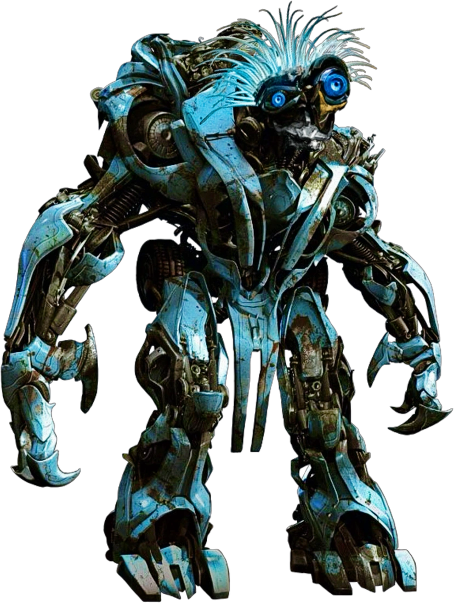

| Personaggio |
Descrizione |
Immagine |
| Sam Witwicky |
interpretato da Shia LaBeouf
Sam ha appena finito l’università e fatica a trovare un lavoro stabile. Vive un momento di crisi personale: sente di aver salvato
il mondo più volte, ma non riceve riconoscimento.
In questo film non è più con Mikaela Banes, ma ha una nuova fidanzata, Carly Spencer conosciuta dopo la fine della sua relazione con Mikaela.
I due si incontrano grazie in un contesto politico e militare legato agli Autobots, in particolare dopo che Sam riceve la Medaglia della Libertà
dal Presidente degli Stati Uniti. Carly, giovane donna britannica, rimane affascinata da lui e iniziano a frequentarsi, arrivando a convivere insieme
|
 |
| Carly Spencer |
Interpretata dalla modella britannica Rosie Huntington-Whiteley
Il suo carattere è raffinato e determinato: non è la tipica “damsel in distress”, ma una figura che riesce a mantenere la calma anche
quando tutto intorno crolla. Ha un portamento sofisticato, quasi da icona glamour, ma allo stesso tempo dimostra coraggio e forza
d’animo quando si trova coinvolta nella battaglia di Chicago. Nonostante non sia un soldato né un tecnico, Carly non resta mai passiva:
sprona Sam, lo sostiene nei momenti di crisi e affronta a testa alta Dylan Gould, il suo capo. |
 |
| Ron Witwicky |
È interpretato dall'attore Kevin Dunn.
È il padre comico e spesso ignaro delle avventure che coinvolgono suo figlio, gli Autobot e i Decepticon.
Sposato con Judy Witwicky, è molto protettivo nei confronti della sua famiglia e del suo giardino.
Nei film, la sua professione viene indicata come giardiniere. |
 |
| Judy Witwicky |
Interpretata dall’attrice statunitense Julie White.
È la madre di Sam Witwicky e viene mostrata come una donna protettiva, ironica e un po’ invadente,
ma allo stesso tempo affettuosa e di supporto alla sua famiglia. |
 |
| Dylan Gould |
Interpretato da Patrick Dempsey.
Dylan è un uomo d’affari di grande fascino e potere. Ama il lusso, le auto di prestigio e il mondo dell’alta società.
È il capo di Carly e rappresenta il lato umano del potere economico e politico. Il suo personaggio aggiunge tensione e complessità,
perché incarna l’idea che non sempre gli uomini sono alleati limpidi: a volte dietro il sorriso elegante si nasconde l’ambizione. |
 |
| Charlotte Mearing |
Interpretata da Frances McDormand.
Charlotte Mearing è una figura istituzionale di grande rilievo. È una funzionaria governativa di altissimo livello, responsabile
delle operazioni legate alla sicurezza nazionale e al rapporto con gli Autobots.
Il suo carattere è molto diverso da quello degli altri personaggi umani: è rigorosa, pragmatica e severa. Non si lascia mai
trascinare dalle emozioni, preferisce mantenere un atteggiamento freddo e professionale. Questo la rende un personaggio autorevole,
ma anche distante. |
 |
| Jerry Wang |
interpretato da Ken Jeon
Lavora in un ambiente burocratico e governativo, ed è collegato alle indagini sugli Autobots e sugli eventi che coinvolgono la NASA.
Il suo carattere è stravagante, paranoico e sopra le righe. È il classico personaggio che porta un tono di comicità surreale in una
storia dominata da tensione e azione. Ha un modo di fare esagerato, spesso nervoso, e sembra sempre nascondere qualcosa. Questo lo
rende divertente da vedere, ma anche un po’ imprevedibile. |
 |
| Dutch |
interpretato da Alan Tudyk
Dutch è uno dei personaggi più particolari e divertenti del film. È l’assistente personale di Seymour Simmons,
l’ex agente del settore governativo che conosci già dai primi capitoli della saga.
Il suo carattere è eccentrico, teatrale e sorprendentemente competente. Ha un modo di fare buffo e sopra le righe,
ma dietro la sua comicità si nasconde una grande abilità e un passato misterioso che lo rende più interessante di quanto sembri. |
 |
| Seymour Simmons |
interpretato da John Turturro un'attore statunitense.
Seymour Simmons è uno dei personaggi umani più riconoscibili e particolari della saga di Transformers.
Lo conosciamo già dai primi film, dove era un agente del settore governativo segreto dedicato agli alieni.
In Transformers 3 lo ritrovi in una veste diversa, ma sempre con il suo stile inconfondibile.
Il suo carattere è eccentrico, teatrale e spesso comico, ma dietro le battute e i comportamenti sopra le righe si nasconde
una persona intelligente e determinata. Simmons è il classico personaggio che riesce a portare leggerezza nelle scene più tese,
ma al tempo stesso sa essere utile e incisivo quando serve. Ha un ego enorme, ama sentirsi importante e spesso esagera nel raccontare
le sue imprese, ma nonostante questo rimane un alleato prezioso. |
 |
| Capitano Lennox |
interpretato da Josh Duhamel un'attore e modello statunitense nel film intepreta il Capitano dell’esercito statunitense,
leader di una squadra di ranger.È tra i primi militari a scontrarsi con i Decepticon
in Medio Oriente e successivamente collabora con gli Autobot per difendere la Terra. |
 |
| Sergente Epps |
interpretato da Tyrese Gibson attore, cantante e modello statunitense nel film interpreta il
Sergente dell’aeronautica statunitense, membro della squadra guidata dal Capitano Lennox. |
 |
| Colonello Morshower |
interpretato da Glenn Morshower Attore statunitense che nel film interpreta il Colonnello dell’aeronautica statunitense.
È al comando della base militare in Qatar che viene attaccata dal Decepticon Blackout all’inizio del film.
Rappresenta la catena di comando militare e la reazione immediata dell’esercito di fronte alla minaccia aliena. |
 |
Autobot
| Personaggio |
Descrizione |
Immagine |
| Optimus Prime |
Optimus Prime è il leader degli Autobot, doppiato da Peter Cullen, doppiatore del personaggio a partire dagli anni ottanta.
È introdotto come un comandante saggio e coraggioso, simbolo di speranza e giustizia nella lotta contro i Decepticon.
Optimus e capice di trasformarsi in un Peterbilt 379 Semi Truck, un camion pesante americano con livrea rossa e blu e dettagli a fiamme.
Combatte con 2 Ion Blaster(un'arma precisa e potente) e delle spade di Energon |
 |
| Bumblebee |
Non presenta doppiatori essendo il guasto alla scatola subito in battaglia su Cybertron.
È stato il primo contatto tra gli autobot e Sam essendo la prima auto di Sam e di conseguenza il suo protettore.
Bumblebee all'inizio lo vediamo capace di trasformarsi in una Chevrolet Camaro Chevrolet Camaro SS gialla con strisce nere.
combatte con un cannone al plasma montato sul braccio destro e dei missili e Blaster integrati sulle spalle
È Leale e protettivo, sempre pronto a difendere Sam e gli umani è giocoso e affettuoso, mostra un lato più umano e
simpatico rispetto agli altri Autobot è coraggioso, affronta i Decepticon senza esitazione e Comunica
in modo creativo, usa la radio per esprimere emozioni e pensieri. |
 |
| IronHide |
Doppiato da Jess Harnell. Autobot esperto in armi e combattimento e braccio destro di Optimus Prime.
È il “militare” del gruppo, sempre pronto allo scontro e protettivo verso gli alleati umani.
si trasforma in un GMC TopKick C4500 pickup nero, combatte con dei cannoni al plasma montati su entrambe le braccia.
Ha una Grande resistenza fisica, che lo rende uno dei combattenti più duri tra gli Autobot.
Ha un carattere aggressivo e diretto, sempre pronto a combattere è leale, profondamente fedele a
Optimus Prime e alla causa degli Autobot, molto Protettivo, soprattutto verso gli umani, anche se con un atteggiamento brusco e
ironico e ruvido, spesso con battute secche e militari. |
 |
| Ratchet |
viene doppiato da Robert Foxworth. È il “medico di campo” del gruppo, responsabile di riparazioni e supporto tecnico.
si transforma in un Hummer H2 verde modificato in versione veicolo di soccorso. È equipaggiato con un
cannone laser montato sul braccio, usato in combattimento; armi energetiche secondarie, per difesa e supporto e
strumenti medici integrati, che gli permettono di riparare e curare gli Autobot durante le battaglie.
Si presenta con un carattere responsabile e premuroso, sempre attento alla salute dei suoi compagni.
Pragmatico, unisce competenze mediche e capacità di combattimento.Leale, fedele a Optimus Prime e alla missione degli Autobot.
Serio e professionale, e molto meno ironico rispetto ad altri membri del gruppo.
|
 |
| Sideswipe |
ll doppiatore che gli dà voce nel film è André Sogliuzzo
Sideswipe è uno degli Autobots più spettacolari introdotti nel secondo film della saga. La sua personalità
è quella di un guerriero elegante ma spietato. Non ha pietà per i Decepticon e combatte con una precisione quasi artistica.
Si trasforma in una Chevrolet Corvette Stingray Convertible argentata. Combatte usando delle lame Cybertanium montate sugli avambracci,
usate per combattimenti corpo a corpo, ma che all'occasione può anche lanciare mentre per i combattimenti a distanza usa due fucili.
|
 |
| Dino/mirage |
Doppiato da da Francesco Quinn
Dino è lo specialista in combattimento ravvicinato e ricognizione. Ha un carattere rapido, deciso e molto elegante nei movimenti.
È agile e scattante, e si muove con grande precisione, diventando un guerriero letale nelle battaglie. Rispetto ad altri Autobots
più “pesanti” come Ironhide, Dino punta sulla velocità e sull’astuzia.
Dino si trasforma in una Ferrari 458 Italia rossa. Dino è equipaggiato con lame retrattili montate sugli avambracci, che usa con grande
abilità nel combattimento corpo a corpo; fruste energetiche che può estendere dai polsi,
utili per immobilizzare o colpire i nemici a distanza ravvicinata. |

|
| Que/Wheeljack |
È doppiato da George Coe
Q è lo scienziato e inventore degli Autobots. Ha un carattere curioso, brillante e un po’ eccentrico.
È il responsabile della creazione di nuove armi e gadget che aiutano gli altri Autobots e gli umani nelle loro missioni.
Il suo modo di fare è più pacato e riflessivo rispetto ai guerrieri come Ironhide o Sideswipe: preferisce pensare e progettare
piuttosto che combattere in prima linea.
Q si trasforma in una Mercedes-Benz E550 berlina argentata. |
.jpg)
|
| Sentinel Prime |
Doppiato da Leonard Nimoy.
Sentinel Prime è un antico leader degli Autobots, mentore di Optimus Prime. È un personaggio che incarna saggezza,
forza e un senso di responsabilità verso la sopravvivenza della sua razza.
È un guerriero potente, dotato di grande carisma e di un portamento regale. La sua figura è quella di un comandante rispettato,
capace di ispirare e guidare.
Sentinel Prime si trasforma in un Rosenbauer Panther 6x6 Airport Fire Truck rosso e nero.
Sentinel Prime è equipaggiato con spada e scudo, che usa con grande maestria nel combattimento corpo a corpo e un Cannone blaster,
per attacchi a distanza, inoltre è il creatore dei "pilastri" che radunati insieme possono creare un ponte spaziale capace di teletrasportare
persino un pianeta. |

|
| Skids |
Skids non appare in questo film perchè e stato accusato di essere un personaggio troppo razzista e sessista.
Ma compare nella sceneggiatura originale e nei fumetti HDW, fumetti di transformers che si basano sulla sceneggiatura originali e
che aggiungono contenuti che vanno a spiegare perchè alcuni personaggi smettono di apparire(peccato che non siano più considerati canonici). |
.jpg)
|
| Mudflap |
Mudflap non appare in questo film perchè e stato accusato di essere un personaggio troppo razzista e sessista come per il fratello.
Ma compare nella sceneggiatura originale e nei fumetti HDW, fumetti di transformers che si basano sulla sceneggiatura originali e
che aggiungono contenuti che vanno a spiegare perchè alcuni personaggi smettono di apparire(peccato che non siano più considerati canonici). |
.jpg)
|
| LeadFoot |
Doppiato da John DiMaggio.
Leadfoot è il più massiccio e “tank” del trio dei Wreckers.
È rude, diretto e un po’ sbruffone. Porta sempre un tono aggressivo e non ha paura di sporcarsi le mani. È il classico guerriero che preferisce
la forza bruta alla finezza. Si transforma in una Chevrolet Impala stock car rossa, in stile NASCAR, sponsorizzata Target. La sua carrozzeria è
modificata con armi pesanti e dettagli da macchina da guerra.
Combatte con Mitragliatrici pesanti integrate, missili e un arsenale da combattimento ravvicinato. È il più corazzato e potente del gruppo. |

|
| Tospin |
Doppiato da Steven Blum.
Topspin è il guerriero più “tecnico” e disciplinato dei Wreckers.
Ha un atteggiamento da combattente esperto, meno caotico di Leadfoot e Roadbuster. È preciso e metodico, con un tono più serio.
Si transforma Una Chevrolet Impala stock car blu, sempre in stile NASCAR, con un look corazzato e modificato per la battaglia.
Combatte con armi pesanti montate sulla carrozzeria, mitragliatrici e artigli meccanici. È versatile e micidiale sia a distanza che nel corpo a corpo. |

|
| RoadBuster |
Doppiato da Ron Bottitta.
Roadbuster è il più sarcastico e diretto del trio. Ha un atteggiamento da combattente “sporco”, sempre pronto a lanciarsi nella mischia.
È ironico e un po’ cinico, ma molto efficace.
Si transforma in una Chevrolet Impala stock car verde, in stile NASCAR, con un design più grezzo e modificato rispetto agli altri.
Combatte con Cannoni pesanti e mitragliatrici montate sul veicolo, perfetti per attacchi devastanti. |

|
| Brain |
Doppiato da Reno Wilson, che doppia anche Wheelie.
Brain è un piccolo Autobot, dall’aspetto quasi caricaturale, che lavora insieme a Wheelie. È curioso, vivace e un po’ stravagante.
Ha un atteggiamento buffo e sopra le righe, ma allo stesso tempo dimostra grande ingegno.
Non è un guerriero da prima linea come Optimus o Ironhide, ma piuttosto un supporto tecnico.
Si occupa di analisi e di compiti più “scientifici”, portando un tono leggero e comico alle scene.
In coppia con Wheelie forma un duo comico che bilancia la tensione del film con momenti più divertenti. |

|
| Wheelie |
È doppiato da Tom Kenny.
Wheelie è uno dei personaggi più particolari della saga: a differenza di molti altri Autobots, non è un grande guerriero
né un combattente imponente. È piccolo, nervoso e inizialmente un Decepticon, ma nel corso del film cambia schieramento e
diventa un Autobot. Questo lo rende un personaggio ambiguo e divertente, spesso usato per alleggerire la tensione con battute
e atteggiamenti buffi. La sua modalità veicolo è un camioncino telecomandato blu |

|
Decepticon
| Personaggio |
Descrizione |
Immagine |
| Megatron |
Doppiato da Hugo Weaving.
Megatron in questo film è logorato e danneggiato dagli scontri precedenti. Porta un mantello metallico che copre parte
del suo corpo distrutto, segno della sua condizione decadente.Nonostante la debolezza, rimane il leader dei Decepticon,
anche se più cupo e meno dominante rispetto ai capitoli precedenti.
La sua figura è segnata da un senso di rabbia e vendetta, e sa di non essere più al massimo della forza e agisce con più cautela.
si trasforma in un Mack Titan 10x6 camion cisterna modificato. Combatte con Cannone fuso integrato, la sua arma principale;
artigli e forza bruta, usati nel corpo a corpo. |
 |
| Starscream |
Doppiato da Charlie Adler. Braccio destro di Megatron, ma con ambizioni di leadership è il classico “secondo in comando”
che trama nell’ombra per prendere il posto del leader. Si trasforma in un caccia F-22 Raptor. È equipaggiato con
Missili aria-aria e aria-terra, integrati nella sua forma di jet; Cannoni energetici, usati in combattimento ravvicinato.
È molto agilite il che lo rende uno dei Decepticon più pericolosi in battaglia. È Ambizioso e traditore, sempre pronto
a spodestare Megatron, ama combattere e mostrare la sua superiorità ma è allo stesso tempo un codardo quando conviene e
non esita a ritirarsi se la situazione diventa troppo rischiosa. |
 |
| Soundwave |
Doppiato da Frank Welker.
Soundwave è il maestro della spionaggio e comunicazioni tra i Decepticon. Ha un carattere freddo, calcolatore e spietato: non mostra emozioni,
ma agisce sempre con precisione chirurgica. In questo film svolge un ruolo importante nel coordinare le operazioni
dei Decepticon sulla Terra, dimostrando la sua natura di stratega e manipolatore.
Si trasforma in una Mercedes-Benz SLS AMG argentata. Combatte con cannoni energetici integrati, usati per colpi precisi e devastanti, usa spesso
droni e minion, tra cui il celebre Laserbeak, che agisce come suo alleato e strumento di infiltrazione. |
 |
| Shockwave |
Viene doppiato da Frank Welker.
Shockwave è un guerriero silenzioso e spietato, privo di emozioni e completamente dedito alla distruzione.
Non parla molto e la sua presenza è comunicata soprattutto attraverso la sua potenza e il suo aspetto minaccioso ed è
considerato uno dei Decepticon più temibili, un’arma vivente che incarna la brutalità e la precisione dei decepticon.
|
 |
| Driller |
Driller è una creatura meccanica colossale, simile a un enorme verme o serpente robotico.
Non ha una personalità vera e propria: è più un’arma vivente, controllata e guidata da Shockwave.
Il suo ruolo è quello di devastare intere strutture e città, aprendo la strada ai Decepticon con la sua forza distruttiva. |
 |
| Laserbeak |
Doppiato da Keith Szarabajka.
Laserbeak è un drone assassino e spia, fedele servitore di Soundwave.
Ha un carattere crudele e sadico: si diverte a terrorizzare le sue vittime prima di eliminarle.
Il suo ruolo è quello di infiltrarsi, raccogliere informazioni e compiere omicidi mirati per conto dei Decepticon.
È uno dei personaggi più sinistri del film, perché agisce nell’ombra e colpisce senza pietà.
Può assumere forme secondarie per infiltrarsi (nel film lo vediamo trasformarsi in oggetti tecnologici come una
stampante o un piccolo veicolo da gioco). Questa capacità di adattamento lo rende un infiltratore perfetto.
Combatte con cannoni energetici montati sulle ali, usati per attacchi rapidi e letali; artigli meccanici
per afferrare e immobilizzare le vittime e la sua agilità e volo, che gli permettono di muoversi velocemente e colpire dall’alto. |
 |
| Barricade |
Doppiato da Jess Harnell.
Barricade è il Decepticon infiltratore e cacciatore, noto per la sua modalità veicolo da auto della polizia.
Ha un carattere aggressivo e intimidatorio: sfrutta la sua forma di pattuglia per ingannare e terrorizzare gli umani.
Barricade si trasforma in una Ford Mustang Saleen S281 Police Car, con la scritta “To punish and enslave”
al posto del classico motto “To protect and serve”. Combatte con cannoni energetici integrati, usati per attacchi rapidi. |
 |
| Crankcase |
Crankcase è un Decepticon infiltratore e combattente da imboscata, caratterizzato da un aspetto minaccioso e selvaggio.
Fa parte dei Dreads, insieme a Hatchet e Crowbar.
Il loro compito è seminare caos e attaccare gli Autobots con tattiche brutali e non convenzionali.
Ha un atteggiamento feroce e animalesco, più vicino a un predatore che a un soldato disciplinato.
Si trasforma in una Chevrolet Suburban nera, modificata in versione SUV della polizia. Combatte con
Artigli e lame retrattili, usati nel combattimento corpo a corpo e armi da fuoco energetiche, tipiche dei Decepticon. |
 |
| Crowbar |
Crowbar è il più feroce e minaccioso dei Dreads. Ha un aspetto da predatore, con dreadlocks
metallici che gli conferiscono un look selvaggio e intimidatorio. È specializzato in imboscate e attacchi rapidi,
agendo come un cacciatore urbano. Il suo ruolo è seminare caos e colpire gli Autobots con tattiche brutali e non convenzionali.
Si trasforma in una Chevrolet Suburban nera, in versione SUV della polizia. Combatte con lame e artigli retrattili,
usati nel combattimento corpo a corpo e armi da fuoco energetiche, tipiche dei Decepticon. |
 |
| Hatchet |
Hatchet è il più bestiale e feroce dei Dreads. Ha un aspetto che ricorda un predatore quadrupede,
con tratti quasi canini, rendendolo diverso dagli altri due membri del gruppo. Il suo ruolo è quello di attaccare
in branco, sfruttando la velocità e la brutalità per sopraffare gli Autobots.È meno “infiltratore”
e più “cacciatore”, incarnando la parte più animalesca del trio.
Si trasforma in una Chevrolet Suburban nera in versione SUV della polizia, come gli altri Dreads.
Combatte con artigli e zanne meccaniche, usati nel combattimento corpo a corpo e armi energetiche integrate,
ma la sua specialità rimane l’attacco fisico brutale. |
 |